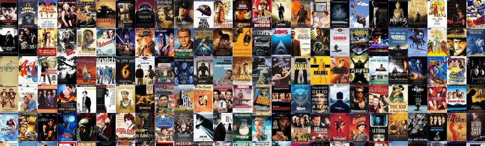

Net TV introduces 200+ channels, where user can watch their favorite channels
from all around the globe.This is the main featured service of Net TV
where the channels are categorized according to the content of channels.

About Net TV
We ensure you to Provide HD streaming service.
We also ensure you to experience the better viewing
behavior with no low quality and grainy content.
Supports all devices: Enjoy television in any screen
Missed your favorite TV shows? Net TV brings
you the better solution with Pause and Play
Feature. It helps you to pause your Favorite
TV shows for a while and again play from where
you left the Show.